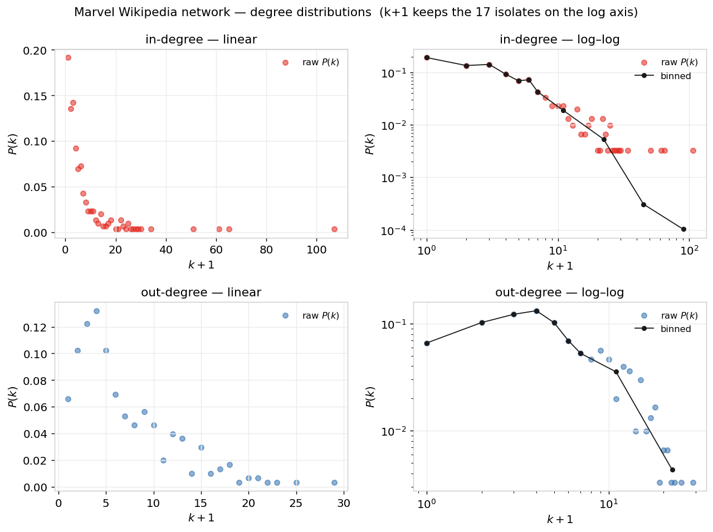
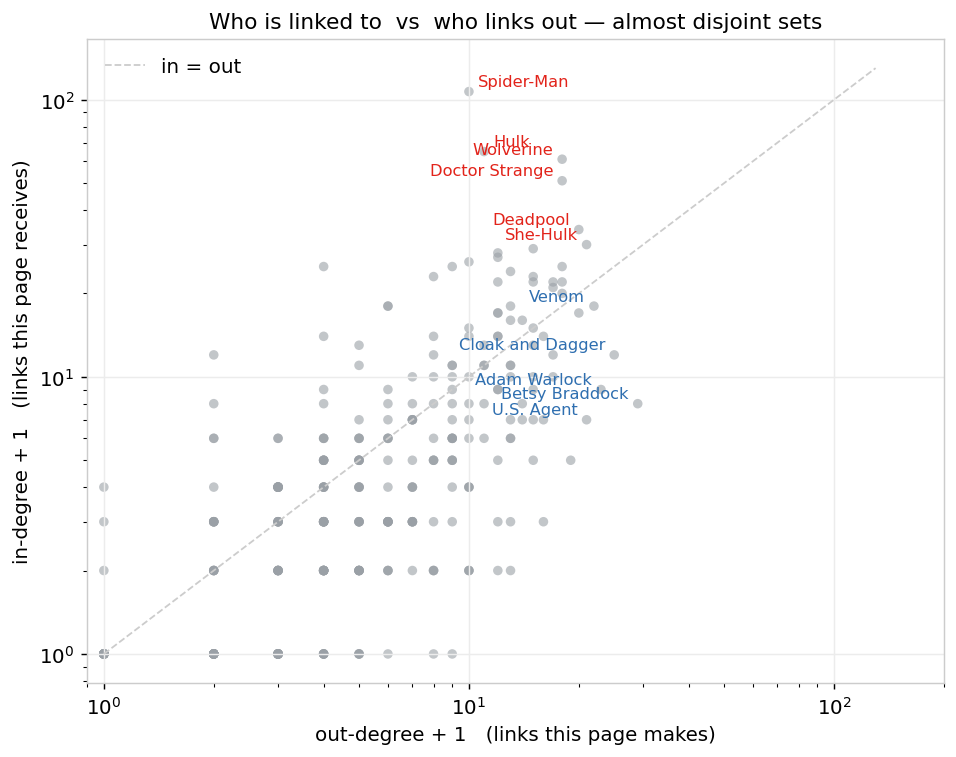
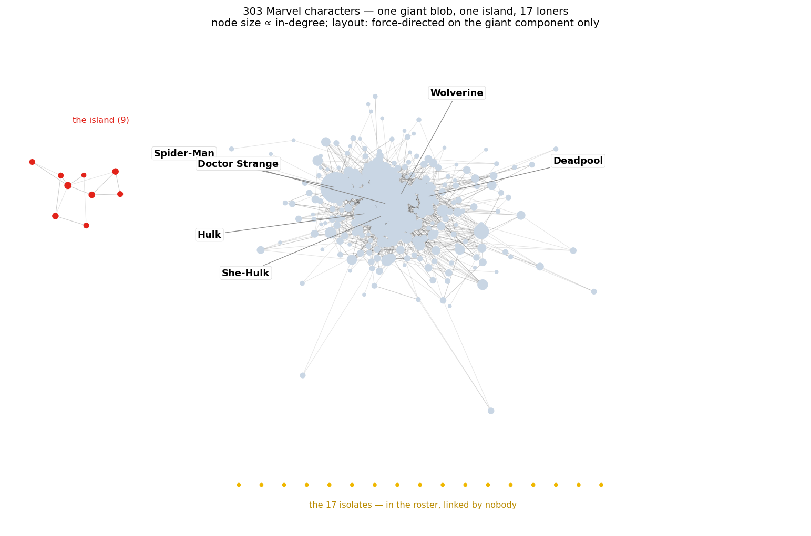
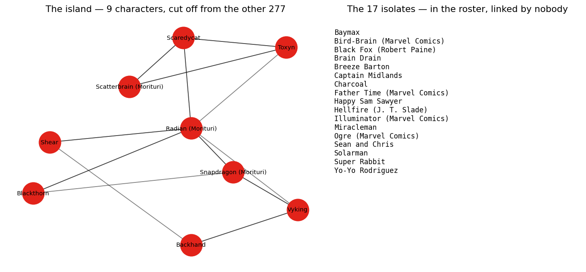

One giant blob, one island, and 17 loners
We loaded the frozen Marvel snapshot, checked it against the numbers on the course page, and then went looking for the edges of the map — the characters who sit just outside the crowd, or entirely alone.
What we asked
- Does our copy of the network actually match the course's stated numbers?
- The degree distributions — do in- and out-degree really look that different?
- Who gets linked to, who links out, and why aren't they the same characters?
- Who lives outside the giant component — the island and the isolates — and are they anybody we've heard of?
What we did
The snapshot ships as two tab-separated files with # comment headers: a roster of
303 characters and a directed edge list where A → B means A's article text links
to B's. The one trap is that 17 characters have no edge in either direction, so building the graph
from the edge list alone silently loses them. We add every node first:
import csv, pandas as pd, networkx as nx
nodes = pd.read_csv("week1_nodes.tsv", sep="\t", comment="#", quoting=csv.QUOTE_NONE)
edges = pd.read_csv("week1_edges.tsv", sep="\t", comment="#", names=["source", "target"])
G = nx.DiGraph()
G.add_nodes_from(nodes.node_id) # every node FIRST -> the 17 isolates survive
G.add_edges_from(edges.itertuples(index=False))That reproduces the course page exactly:
| Quantity | Ours | Page |
|---|---|---|
| Nodes | 303 | 303 |
| Directed edges | 1,784 | 1,784 |
| Undirected pairs | 1,434 | 1,434 |
| Reciprocated pairs | 350 | 350 |
| ⟨k⟩ (undirected) | 9.47 | ≈ 9.5 |
| Density | 3.1% | ≈ 3% |
| Isolates | 17 | 17 |
| Giant component | 277 | 277 |
The two edge counts differ for one reason: 1,784 counts every directed link, and 350 of those links are reciprocated (A → B and B → A). Collapse each reciprocated pair to a single undirected edge and you remove exactly 350, leaving 1,784 − 350 = 1,434.
The degree distributions

k + 1 so the
17 zero-degree characters survive the log axis. Black line: the course's mixed binning
(width-1 bins up to k+1 = 7, doubling bins after).On log–log axes the in-degree runs down a rough straight line all the way out to
Spider-Man at k = 106 — the shape people mean when they say "power-law-ish".
The out-degree tail is a different animal: it bends and stops near
k ≈ 28, nearly four times shorter. On semi-log axes (not shown) out-degree
is the one that straightens. Are we sure in-degree is a power law? Not from this — n = 303
is small and the fit spans barely 1.5 decades. "Straight-ish on log–log" is a shape reading, not a
fitted exponent. The honest tool is the cumulative distribution, which is a week-2 problem.
Who is linked to vs who links out

| # | Most linked to (in-degree) | kin | Most linking out (out-degree) | kout |
|---|---|---|---|---|
| 1 | Spider-Man | 106 | Betsy Braddock | 28 |
| 2 | Hulk | 64 | Cloak and Dagger | 24 |
| 3 | Wolverine | 60 | Adam Warlock | 22 |
| 4 | Doctor Strange | 50 | Venom | 21 |
| 5 | Deadpool | 33 | She-Hulk | 20 |
| 6 | She-Hulk | 29 | U.S. Agent | 20 |
| 7 | Scarlet Witch | 28 | Deadpool | 19 |
| 8 | Black Panther | 27 | Rachel Summers | 19 |
Only three names (She-Hulk, Deadpool, Doctor Strange) appear in both top-tens. The reason is in who creates each edge. An in-link is conferred: some other article's editors decided this character was worth mentioning — and the more central a character already is, the more editors reach for them, so in-degree keeps compounding (Spider-Man is linked by a third of the whole category). An out-link is authored: somebody sat down and wrote it into this page, so out-degree is capped by how thorough one article happens to be. Betsy Braddock tops the out-degree list not because she's the most important mutant but because her page is a continuity-heavy page that name-drops half the X-books. In this network, in-degree ≈ fame, out-degree ≈ how chatty your own article is.
The edges of the map

Outside the giant blob there's exactly one other connected piece: a 9-character island — Backhand, Blackthorn, Radian, Scaredycat, Scatterbrain, Shear, Snapdragon, Toxyn and Vyking. Several are from the 1980s series Strikeforce: Morituri; the rest are equally deep cuts. Their articles cite each other — a shared pocket of continuity — but not one of them links to, or is linked from, a single character in the main 277. They're a closed loop the A-list never noticed.

What surprised us
Baymax is an isolate. The inflatable robot from a Disney film that made $650M sits in the roster with degree zero — no Marvel-superhero article's running text links to him, and his own doesn't link back. Fame in the cinema and fame in Wikipedia's link graph are just different quantities. The same list holds Miracleman (a character with one of the most famous rights sagas in comics), Super Rabbit, and Yo-Yo Rodriguez, a hero far better known from TV than from the page graph. The lesson from the course's Part 3 lands hard here: the network only knows what the harvesting rule captured. Links from navigation templates were deliberately excluded, which is defensible — but it's also exactly why Baymax, who probably shares a navbox with half the MCU, comes out with no edges at all.
Reproduce everything: cd analysis && python3 week1.py.
Data is the frozen course snapshot in data/.